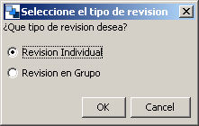

Pautas para la particularización, instanciación y la ejecución
Particularización del patr�n en un Diseño de aprendizaje:
- En la paticularización, varias tareas deben ser
realizadas: primero, determinar el tipo de revision que se va a realizar;
esto se realiza en la ventana que se muestra inmediatamente después
de que el CLFP Revisión entre iguales es elegido:

- A continuación, definición de los objetivos y los
prerrequisitos,
especificación de las actividades tanto del profesor como de los
alumnos (definición del problema a resolver, etc.),
creación de los recursos necesarios (contenidos y herramientas)
y configuración de la completitud de las actividades (por
ejemplo, control de tiempo).
Instanciación del Diseño de Aprendizaje basado en el
CLFP Revisión entre iguales:
- En la instanciación, diversas tareas deben ser realizadas:
creación de los diferentes grupos y asignación de cada
persona a un grupo.